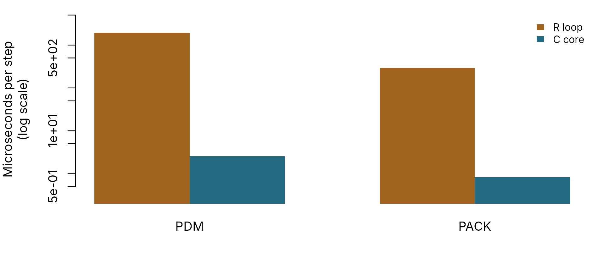

The C core: speed, equivalence and other languages
pdmS7 documentation
Source:vignettes/compiled-core.Rmd
compiled-core.RmdThe model equations are written twice in pdmS7: once in R, as the
readable reference, and once in plain C99, src/pdm_core.c,
for speed. R calls the C version automatically. Other languages call the
same C code through its interface, src/pdm_core.h, so a
model run from Python or Scala is the same model as one run from R.
| The core runs | C function |
|---|---|
| PDM with every component: five distributions, three recharge rules, three routing forms | pdm_run() |
| The PACK snowpack, alone or feeding PDM |
pdm_pack_run(), pdm_snow_run()
|
| State correction and ARMA error prediction |
pdm_correct_state(),
pdm_update_forecast()
|
| Cold and steady-state starts |
pdm_initial_state(),
pdm_state_from_flow()
|
Calibration, configuration files and metrics stay in each language.
Speed
R evaluates each time step through general-purpose objects and checks. That costs about two milliseconds per step, almost all of it overhead rather than hydrology. The C loop does the same arithmetic directly.
set.seed(1)
n <- 1000
forcing <- data.frame(rain = ifelse(stats::runif(n) < 0.3, stats::rgamma(n, 0.7, scale = 4), 0),
pet = 0.1)
temperature <- 2 + 6 * sin(seq_len(n) / 80)
model <- pdm_model(area_km2 = 50)
snow <- pack_from_config(pack_presets())
time_per_step <- function(engine, expr) {
old <- options(pdmS7.engine = engine)
on.exit(options(old))
reps <- if (engine == "r") 1 else 50
unname(system.time(for (i in seq_len(reps)) force(expr()))[["elapsed"]]) / reps / n * 1e6
}
timings <- rbind(
PDM = c(R = time_per_step("r", function() run_pdm(model, forcing)),
C = time_per_step("auto", function() run_pdm(model, forcing))),
PACK = c(R = time_per_step("r", function() sim_pack(forcing$rain, temperature, snow)),
C = time_per_step("auto", function() sim_pack(forcing$rain, temperature, snow)))
)
par(mar = c(4, 5, 1, 1))
barplot(t(timings), beside = TRUE, log = "y", col = pal[c(2, 1)], border = NA,
ylab = "Microseconds per step\n(log scale)", ylim = c(0.2, 5000))
legend("topright", c("R loop", "C core"), fill = pal[c(2, 1)], border = NA, bty = "n",
cex = 0.8)
Time per model step, on a log scale, for the R reference loop and the compiled core, measured as this article was built.
round(timings, 1)
#> R C
#> PDM 1938 2.6
#> PACK 292 0.8The exact figures depend on the machine, but the ratio is in the hundreds. For a calibration that needs a million model runs, that is the difference between weeks and hours. The performance guide gives measured figures for daily and 15-minute records.
Do the two engines agree?
Yes, to the last one or two digits of a double-precision number. On R
4.3 they are usually bit-identical; later R versions round
sum() and ^ slightly differently, which moves
the last digit. The tests require agreement within 1e-12 of each
quantity’s size.
both <- function(m) {
old <- options(pdmS7.engine = "r")
reference <- run_pdm(m, forcing)$output
options(old)
compiled <- run_pdm(m, forcing)$output
max(abs(as.matrix(compiled) - as.matrix(reference)))
}
c(
default = both(model),
lognormal_split = both(pdm_model(distribution = FlodeLognormalCapacity(4.1, 1),
recharge = FlodeSplitRecharge(0.6), area_km2 = 50)),
exponential_routes = both(pdm_model(surface = FlodeExponentialRouting(0.05, -5),
groundwater = FlodeExponentialRouting(0.02, -8),
area_km2 = 50))
)
#> default lognormal_split exponential_routes
#> 0.000000e+00 1.421085e-13 0.000000e+00To run the R reference instead, for checking or debugging, set
options(pdmS7.engine = "r");
options(pdmS7.engine = "auto") restores the default.
Golden test files
inst/golden/ holds inputs and expected outputs from the
R reference for every component: PDM configurations, snowpack runs,
coupled snow and PDM runs, state corrections, ARMA updates and
steady-state starts, together with invalid inputs that must be rejected.
A binding in any language passes if it reproduces every output within
1e-12 of its magnitude. The R tests check both engines against them, and
tools/core/check_golden.c checks the core from plain C,
with no R involved.
Calling the core from Python
Build the shared library once with any C compiler, for example on Linux:
Python then needs only its standard ctypes module. The
structures mirror pdm_core.h field for field; check their
sizes against the header before trusting a new binding.
import ctypes
lib = ctypes.CDLL("./libpdmcore.so")
class Route(ctypes.Structure):
_fields_ = [("type", ctypes.c_int32), ("smith", ctypes.c_int32)] + [
(name, ctypes.c_double) for name in "k1 k2 k m rtol atol a gamma".split()]
class Params(ctypes.Structure):
_fields_ = [("distribution", ctypes.c_int32), ("recharge", ctypes.c_int32)] + [
(name, ctypes.c_double)
for name in "cmin cmax b mean meanlog sdlog kg bg st alpha beta qsat".split()] + [
("surface", Route), ("groundwater", Route)] + [
(name, ctypes.c_double) for name in "be fc td qc area_km2 dt".split()]
assert ctypes.sizeof(Route) == 72 and ctypes.sizeof(Params) == 296
D = ctypes.POINTER(ctypes.c_double)
lib.pdm_state_length.restype = ctypes.c_int64
lib.pdm_state_length.argtypes = [ctypes.POINTER(Params)]
lib.pdm_state_from_flow.argtypes = [ctypes.POINTER(Params), ctypes.c_double, ctypes.c_double,
ctypes.c_double, D, ctypes.c_int64, ctypes.c_char_p,
ctypes.c_int64]
lib.pdm_run.argtypes = [ctypes.POINTER(Params), D, D, ctypes.c_int64, D, ctypes.c_int64, D, D,
D, ctypes.c_char_p, ctypes.c_int64]
# The default model: Pareto soil store, standard recharge, cascade surface, cubic groundwater.
p = Params(distribution=0, recharge=0, cmin=0, cmax=140, b=0.4, kg=24, bg=1, st=0,
be=1, fc=1, td=0, qc=0, area_km2=50, dt=1)
p.surface = Route(type=0, k1=2, k2=4)
p.groundwater = Route(type=1, k=1 / 10000, m=3, rtol=1e-8, atol=1e-10)
n = 48
rain = (ctypes.c_double * n)(*([0.0] * 6 + [4.0] * 6 + [0.0] * 36))
pet = (ctypes.c_double * n)(*([0.1] * n))
length = lib.pdm_state_length(ctypes.byref(p))
state = (ctypes.c_double * length)()
q = (ctypes.c_double * n)()
q_end = (ctypes.c_double * n)()
message = ctypes.create_string_buffer(256)
# Warm start in steady state with 0.8 m3/s, 70 per cent baseflow, then run.
assert lib.pdm_state_from_flow(ctypes.byref(p), 0.8, 0.7, 0.5, state, length,
message, 256) == 0, message.value
assert lib.pdm_run(ctypes.byref(p), rain, pet, n, state, length, q, q_end, None,
message, 256) == 0, message.value
print([round(x, 3) for x in q[:12]])It prints the same twelve flows as the equivalent run in R:
m <- pdm_model(area_km2 = 50)
storm <- data.frame(rain = c(rep(0, 6), rep(4, 6), rep(0, 36)), pet = 0.1)
round(run_pdm(m, storm, initial_state_from_flow(m, 0.8, 0.7))$output$q_m3s[1:12], 3)
#> [1] 0.796 0.776 0.747 0.717 0.688 0.662 0.647 0.691 0.839 1.096 1.460 1.929Every function returns 0 on success, 1 for invalid input and 2 for a numerical failure, with a message in the buffer. On failure the state array is left unchanged. The core holds no global state, so separate runs can execute in parallel threads.
Calling the core from C, Scala, Julia and others
Any language with a C foreign function interface can do the same.
From the JVM, Scala and Java use the Foreign Function and Memory API
(standard from Java 22) or JNA; Julia uses ccall.
tools/core/README.md gives build commands for Linux, macOS
and Windows, the structure sizes for each language, and how to check a
new binding against the golden files.